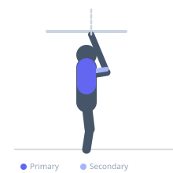

Exercise guide / Band-Assisted Pull-Up
Band-Assisted Pull-Up
The band-assisted pull-up uses a looped resistance band anchored around the bar and under the knees or feet to provide upward assistance throughout the range of motion. The band offloads the most bodyweight at the bottom — where the pull-up is mechanically hardest — allowing trainees to build pulling strength progressively before performing unassisted pull-ups.
Primary muscles
latissimus dorsi
Secondary muscles
rhomboid major
biceps brachii
trapezius middle
Stabilizers
erector spinae
Equipment
Smith Machine
Resistance Band (Loop / Mini Band)


Starting position
- Loop a resistance band over the pull-up bar. Place both knees (or one foot) in the bottom of the loop. Grip the bar shoulder-width with an overhand grip. Arms fully extended.
Setup
- Choose a band thickness based on the amount of assistance needed — heavier individuals or beginners use a thicker band. Ensure the band is secure around the bar before loading it with body weight.
Steps
- Step 1: Hang from the bar with the band supporting the knees or feet, arms fully extended.
- Step 2: Depress and retract the shoulder blades to initiate the movement.
- Step 3: Pull the chest toward the bar by driving the elbows down and back.
- Step 4: Continue pulling until the chin clears the bar.
- Step 5: Lower under control to the dead-hang start position.
Coaching cues
- Lead with the chest, not the chin
- Drive the elbows toward your hip pockets
- Control the descent — do not drop
Breathing
- Exhale on the way up, inhale on the way down.
Range of motion
- Full dead hang at the bottom to chin above the bar at the top.
Tempo
- 2-1-3-0 (2s up, 1s hold, 3s down)
Common mistakes
- Using a band so thick that it removes all challenge — progress to thinner bands over time
- Kipping or swinging rather than using controlled pulling strength
- Not reaching full arm extension at the bottom of each rep
Safety
- Step into and out of the band carefully — do not let it snap back
- Inspect the band for cracks or tears before each session
Training
- strength: 5–8 reps
- hypertrophy: 8–12 reps
- strength: 3–5 sets
- Rest: {'strength': 120, 'hypertrophy': 90}